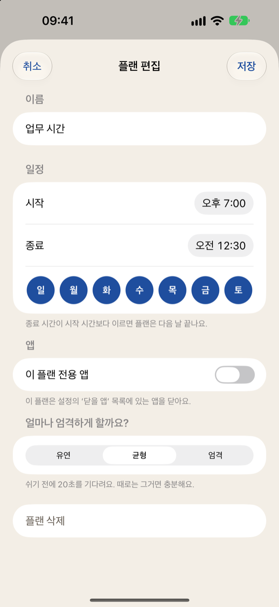
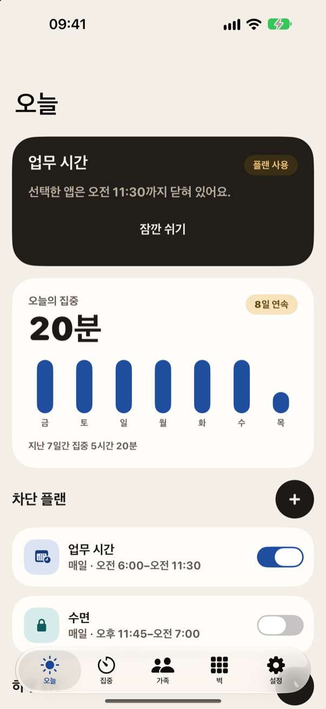
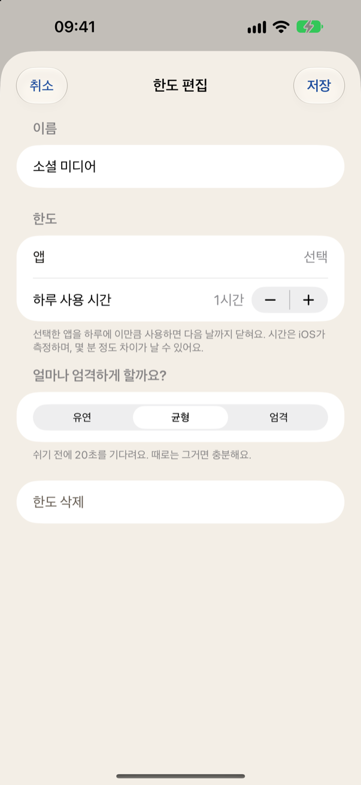
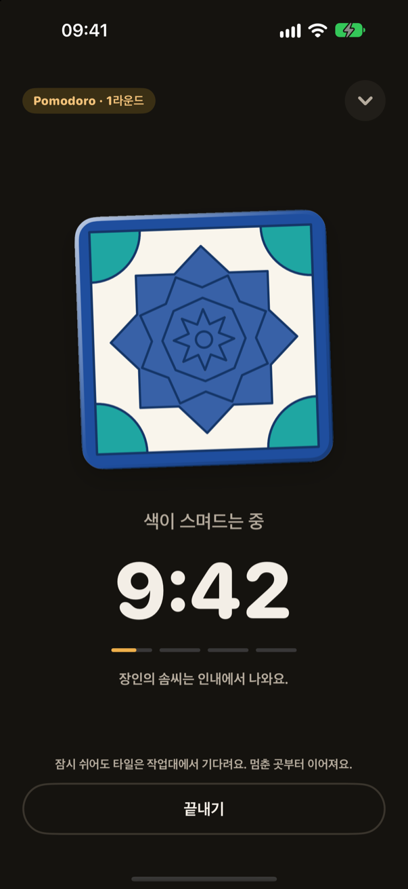
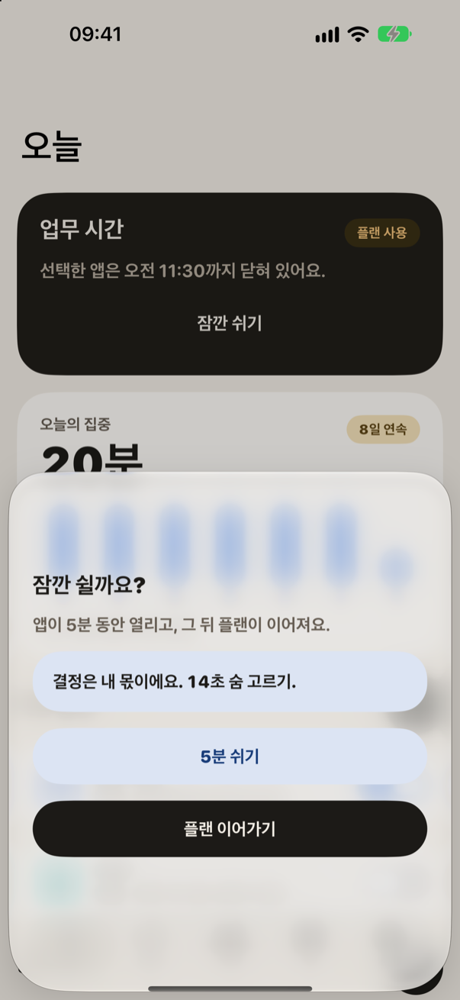
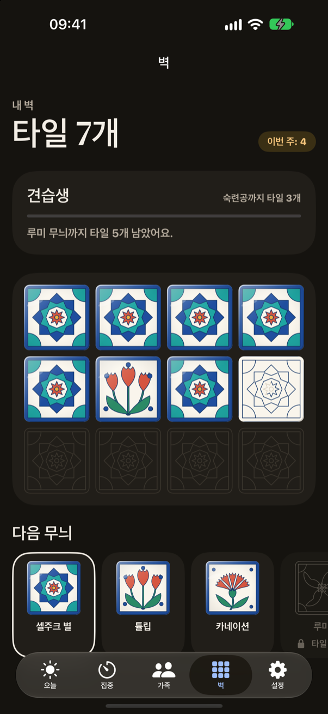
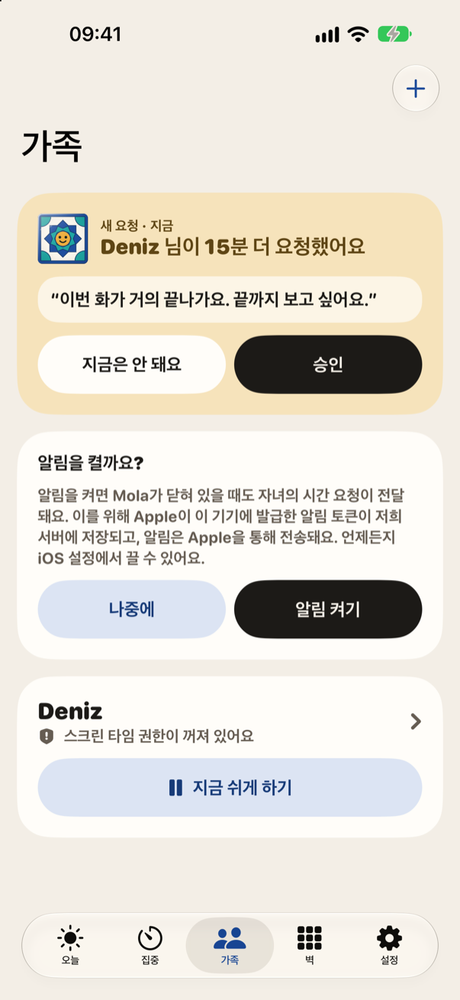
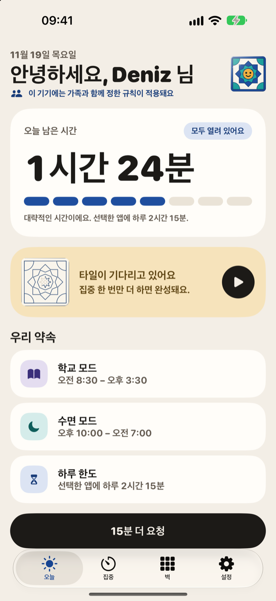

차단 플랜
시간만 정하면 나머지는 알아서
플랜이 시작되면 고른 앱이 닫히고, 끝나면 다시 열려요. 평일, 주말, 또는 원하는 요일마다 플랜을 따로 만들 수 있어요.
- 업무, 공부, 수면 시간별 플랜
- 자정을 넘기는 플랜
- 탭 한 번으로 플랜 켜고 끄기

앱 차단과 집중 · iPhone, iPad, Apple Watch
Mola는 고른 앱을 정해 둔 시간이나 하루 사용 시간을 다 썼을 때 차단하고, 집중 세션마다 타일 하나를 칠해요. 가입이 없고, 사용 데이터는 내 기기에 남아요.
iOS 18 이상. 광고 없음, 추적 없음.

가장 방해되는 앱, 카테고리, 웹사이트를 Apple의 선택 화면에서 골라요. 선택한 내용은 휴대폰 밖으로 나가지 않아요.
업무, 공부, 수면 시간에 맞춰 플랜을 만들어요. 플랜이 없는 시간에는 원할 때 집중 세션을 시작하면 돼요.
집중 세션마다 타일 하나를 칠해요. 완성된 타일은 벽에 쌓이고, 미완성 타일은 다음 세션에서 멈춘 곳부터 이어져요.
차단 플랜
플랜이 시작되면 고른 앱이 닫히고, 끝나면 다시 열려요. 평일, 주말, 또는 원하는 요일마다 플랜을 따로 만들 수 있어요.

하루 한도
고른 앱에 하루 사용 시간을 정해 주세요. 시간을 다 쓰면 그 앱들은 차단되고, 다른 앱은 그대로 열려 있어요.

집중 세션
준비된 프로그램 중 하나를 고르거나 집중 시간, 라운드 수, 휴식 길이를 직접 정할 수 있어요. 원하면 세션이 진행되는 동안 고른 앱이 차단된 채로 있어요.

엄격함 단계
균형 플랜에서 잠깐 쉬거나 세션을 일찍 끝내고 싶을 때, Mola는 먼저 잠시 기다리게 해요. 때로는 그거면 충분해요. 다만 엄격 플랜은 끝날 때까지 바꿀 수 없어요.

타일 벽
타일은 먼저 윤곽선, 다음은 색, 마지막으로 유약을 입어요. 셀주크 별로 시작하고, 벽이 자라면 튤립, 카네이션, 루미, 친테마니, 하타이, 엮음, 석류 무늬가 열리며 견습생에서 장인을 향해 나아가요.

Apple Watch의 집중 타이머: 워치 앱이 열려 있는 동안 세션이 휴대폰과 동기화되고, 같은 타일이 칠해지며, 남은 시간과 현재 시각을 함께 볼 수 있어요.
홈 화면에서 탭 한 번으로 세션을 시작하고 남은 시간을 한눈에 확인해요.
레이아웃이 화면 크기에 맞춰 바뀌어요. 기기를 접어도 보던 곳을 잃지 않아요.
터키어와 영어, 그리고 독일어, 프랑스어, 스페인어, 일본어, 한국어, 아랍어 등.
가족
Mola를 혼자 쓰다가도 언제든 가족을 만들 수 있어요. 자녀 휴대폰의 하루 사용 시간, 수업 시간, 수면 시간을 자녀와 함께 정하고, 자녀는 어떤 규칙이 왜, 언제까지 적용되는지 자기 화면에서 볼 수 있어요.
하루 사용 시간, 학교 모드, 수면 모드. 숨겨진 규칙은 없어요.
자녀가 짧은 이유를 적어 시간을 더 요청하면, 보호자가 탭 한 번으로 답해요.
Mola는 메시지, 사진, 위치, 어떤 앱을 쓰는지를 보호자에게 보여 주지 않아요.
가족 기기 사이의 메시지는 기기에서 암호화돼요. 저희 서버는 내용을 읽을 수 없어요.
보호자가 준 쉬는 시간이나 새 규칙은 자녀의 휴대폰에서 Mola를 열 때 적용돼요. Mola는 Apple의 스크린 타임 시스템으로 작동해요.


개인정보 보호
Mola는 데이터를 수집하지 않고도 작동하도록 설계했어요. 혼자 사용할 때는 저희 서버에 어떤 기록도 만들어지지 않아요.
iOS 18 이상의 iPhone, iPadOS 18 이상의 iPad, watchOS 11 이상의 Apple Watch에서 작동해요.
아니요. 가입, 이메일, 암호가 없어서 Mola를 열자마자 바로 쓸 수 있어요. 가족 기능도 이메일 주소나 전화번호를 묻지 않아요. 기기는 QR 코드로 연결하고, 가족에게 보일 이름만 적으면 돼요.
네. 오늘 탭에서 하루 한도를 만들고, 앱을 고른 뒤 하루 사용 시간을 정하세요. 시간을 다 쓰면 그 앱들은 차단돼요. 한도의 엄격함 단계가 허용하면 5분 쉴 수 있어요. 특정 시간대에 차단하려면 차단 플랜을 사용하세요.
플랜의 엄격함 단계가 허용하면 5분 쉴 수 있어요. 균형 플랜에서는 쉬기 전에 20초를 기다리고, 엄격 플랜에는 플랜이 끝날 때까지 휴식이 없어요. 유연 플랜과 균형 플랜은 Mola에서 언제든 끌 수 있지만, 엄격 플랜은 시간이 끝날 때까지 끌 수 없어요.
아니요. 앱은 Apple의 스크린 타임 선택 화면에서 골라요. Mola는 고른 앱의 이름조차 알지 못하고, 내 기기에서만 유효한 암호화된 토큰만 저장해요.
보호자와 자녀의 휴대폰 양쪽에 Mola가 설치되어 있으면 돼요. 자녀가 규칙을 없앨 수 없도록, 자녀의 Apple 계정을 가족 공유에서 자녀로 설정해 두기를 권해요.
플랜, 집중 기록, 타일 벽은 기기에 저장되므로 앱과 함께 삭제돼요. 가족 기능을 썼다면 ‘데이터 삭제’ 페이지에서 서버 기록을 삭제하는 방법을 확인할 수 있어요.
스크린 타임 설정과 Mola로, 단계별로.
앱 시간 제한, 다운타임, 그리고 Mola의 하루 한도.
25분 라운드, 휴식, 그리고 휴대폰을 작업에서 떼어 두기.
Mola는 곧 App Store에 나와요.